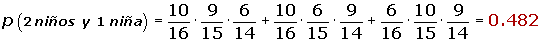

Problemas de probabilidad condicionada
1De una baraja de 48 cartas se extrae simultáneamente dos de ellas. Calcular la probabilidad de que:
1Las dos sean copas
2Al menos una sea copas
3Una sea copa y la otra espada
2Ante un examen, un alumno sólo ha estudiado 15 de los 25 temas correspondientes a la materia del mismo. Éste se realiza en trayendo al azar dos temas y dejando que el alumno escoja uno de los dos para ser examinado del mismo. Hallar la probabilidad de que el alumno pueda elegir en el examen uno de los temas estudiados.
3Una clase está formada por 10 chicos y 10 chicas; la mitad de las chicas y la mitad de los chicos han elegido francés como asignatura optativa.
1¿Cuál es la probabilidad de que una persona elegida al azar sea chico o estudio francés?
2¿Y la probabilidad de que sea chica y no estudié francés?
4En una clase en la que todos practican algún deporte, el 60% de los alumnos juega al fútbol o al baloncesto y el 10% practica ambos deportes. Si además a y un 60% que no juega al fútbol, ¿cuál será la probabilidad de que escogido al azar un alumno de la clase:
1Juegue sólo al fútbol
2Juegue sólo al baloncesto
3Practique uno solo de los deportes
4No juegue ni al fútbol ni al baloncesto
5Un taller sabe que por término medio acuden: por la mañana tres automóviles con problemas eléctricos, ocho con problemas mecánicos y tres con problemas de chapa, y por la tarde dos con problemas eléctricos, tres con problemas mecánicos y uno con problemas de chapa.
1Hacer una tabla ordenando los datos anteriores
2Calcular el porcentaje de los que acuden por la tarde
3Calcular el porcentaje de los que acuden por problemas mecánicos
4Calcular la probabilidad de que un automóvil con problemas eléctricos acuda por la mañana
6En una ciudad, el 40% de la población tiene cabellos castaños, el 25% tiene ojos castaños y el 15% tiene cabellos y ojos castaños. Se escoge una persona al azar:
1Si tiene los cabellos castaños, ¿cuál es la probabilidad de que tenga también ojos castaños?
2Si tiene ojos castaños, ¿cuál es la probabilidad de que no tenga cabellos castaños?
3¿Cuál es la probabilidad de que no tenga cabellos ni ojos castaños?
7En un aula hay 100 alumnos, de los cuales: 40 son hombres, 30 usan gafas, y 15 son varones y usan gafas. Si seleccionamos al azar un alumno de dicho curso:
1¿Cuál es la probabilidad de que sea mujer y no use gafas?
2Si sabemos que el alumno seleccionado no usa gafas, ¿qué probabilidad hay de que sea hombre?
8Se sortea un viaje a Roma entre los 120 mejores clientes de una agencia de automóviles. De ellos, 65 son mujeres, 80 están casados y 45 son mujeres casadas. Se pide:
1¿Cuál será la probabilidad de que le toque el viaje a un hombre soltero?
2Si del afortunado se sabe que es casado, ¿cuál será la probabilidad de que sea una mujer?
9Una clase consta de seis niñas y 10 niños. Si se escoge un comité de tres al azar, hallar la probabilidad de:
1Seleccionar tres niños
2Seleccionar exactamente dos niños y una niña
3Seleccionar por lo menos un niño
4Seleccionar exactamente dos niñas y un niño
10Una urna contiene 5 bolas rojas y 8 verdes. Se extrae una bola y se reemplaza por dos del otro color. A continuación, se extrae una segunda bola
1Probabilidad de que la segunda bola sea verde
2Probabilidad de que las dos bolas extraídas sean del mismo color
11Se supone que 25 de cada 100 hombres y 600 de cada 1000 mujeres usan gafas. Si el número de mujeres es cuatro veces superior al de hombres, se pide la probabilidad de encontrarnos:
1Con una persona sin gafas
2Con una mujer con gafas
12En un centro escolar los alumnos pueden optar por cursar como lengua extranjera inglés o francés. En un determinado curso, el 90% de los alumnos estudia inglés y el resto francés. El 30% de los que estudian inglés son chicos y de los que estudian francés son chicos el 40%. El elegido un alumno al azar, ¿cuál es la probabilidad de que sea chica?
13Una caja contiene tres monedas. Una moneda es corriente, otra tiene dos caras y la otra está cargada de modo que la probabilidad de obtener cara es de 1/3. Se selecciona una moneda lanzar y se lanza al aire. Hallar la probabilidad de que salga cara
14Disponemos de dos urnas: la urna A contiene 6 bolas rojas y 4 bolas blancas, la urna B contiene 4 bolas rojas y 8 bolas blancas. Se lanza un dado, si aparece un número menor que 3; nos vamos a la urna A; si el resultado es 3 ó más, nos vamos a la urna B. A continuación extraemos una bola. Se pide:
1Probabilidad de que la bola sea roja y de la urna B
2Probabilidad de que la bola sea blanca
15Se dispone de tres cajas con bombillas. La primera contiene 10 bombillas, de las cuales a y cuatro fundidas; en la segunda hay seis bombillas, estando una de ellas fundida, y la tercera caja hay tres bombillas fundidas de un total de ocho. ¿Cuál es la probabilidad de que al tomar una bombilla al azar de una cualquiera de las cajas, esté fundida?
16Un estudiante cuenta, para un examen con la ayuda de un despertador, el cual consigue despertarlo en un 80% de los casos. Si oye el despertador, la probabilidad de que realiza el examen es 0.9 y, en caso contrario, de 0.5.
1Si va a realizar el examen, ¿cuál es la probabilidad de que haya oído el despertador?
2Si no realiza el examen, ¿cuál es la probabilidad de que no haya oído el despertador?
17En una estantería hay 60 novelas y 20 libros de poesía. Una persona A elige un libro al azar de la estantería y se lo lleva. A continuación otra persona B elige otro libro al azar
1¿Cuál es la probabilidad de que el libro seleccionado por B sea una novela?
2Si se sabe que B eligió una novela, ¿cuál es la probabilidad de que el libro seleccionado por A sea de poesía?
18En una casa hay tres llaveros A, B y C; el primero con cinco llaves, el segundo con siete y el tercero con ocho, de las que sólo una de cada llavero abre la puerta del trastero. Se escoge a Lázaro llavero y, de él, una llave intenta abrir el trastero. Se pide:
1¿Cuál será la probabilidad de que se acierte con la llave?
2¿Cuál será la probabilidad de que el llavero escogido sea el tercero y la llave no abra?
3Y si la llave escogida es la correcta, ¿cuál será la probabilidad de que pertenezca al primer llavero A?
19El 20% de los empleados de una empresa son ingenieros y otro 20% son economistas. El 75% de los ingenieros ocupan un puesto directivo y el 50% de los economistas también, mientras que los no ingenieros y los no economistas solamente el 20% ocupa un puesto directivo. ¿Cuál es la probabilidad de que un empleado directivo elegido al azar sea ingeniero?
- 1
- 2
- 3
- 4
- 5
- 6
- 7
- 8
- 9
- 10
- 11
- 12
- 13
- 14
- 15
- 16
- 17
- 18
- 19
Ejercicio 1 resuelto
De una baraja de 48 cartas se extrae simultáneamente dos de ellas. Calcular la probabilidad de que:
Soluciones:1Las dos sean copas
2Al menos una sea copas
3Una sea copa y la otra espada
Ejercicio 2 resuelto
Ante un examen, un alumno sólo ha estudiado 15 de los 25 temas correspondientes a la materia del mismo. Éste se realiza en trayendo al azar dos temas y dejando que el alumno escoja uno de los dos para ser examinado del mismo. Hallar la probabilidad de que el alumno pueda elegir en el examen uno de los temas estudiados.
Ejercicio 3 resuelto
Una clase está formada por 10 chicos y 10 chicas; la mitad de las chicas y la mitad de los chicos han elegido francés como asignatura optativa.
Soluciones:1¿Cuál es la probabilidad de que una persona elegida al azar sea chico o estudio francés?
2¿Y la probabilidad de que sea chica y no estudié francés?
Ejercicio 4 resuelto
En una clase en la que todos practican algún deporte, el 60% de los alumnos juega al fútbol o al baloncesto y el 10% practica ambos deportes. Si además a y un 60% que no juega al fútbol, ¿cuál será la probabilidad de que escogido al azar un alumno de la clase:
Soluciones:1Juegue sólo al fútbol

2Juegue sólo al baloncesto

3Practique uno solo de los deportes
4No juegue ni al fútbol ni al baloncesto
Ejercicio 5 resuelto
Un taller sabe que por término medio acuden: por la mañana tres automóviles con problemas eléctricos, ocho con problemas mecánicos y tres con problemas de chapa, y por la tarde dos con problemas eléctricos, tres con problemas mecánicos y uno con problemas de chapa.
Soluciones:1Hacer una tabla ordenando los datos anteriores
2Calcular el porcentaje de los que acuden por la tarde
3Calcular el porcentaje de los que acuden por problemas mecánicos

4Calcular la probabilidad de que un automóvil con problemas eléctricos acuda por la mañana
Ejercicio 6 resuelto
En una ciudad, el 40% de la población tiene cabellos castaños, el 25% tiene ojos castaños y el 15% tiene cabellos y ojos castaños. Se escoge una persona al azar:
Soluciones:1Si tiene los cabellos castaños, ¿cuál es la probabilidad de que tenga también ojos castaños?
2Si tiene ojos castaños, ¿cuál es la probabilidad de que no tenga cabellos castaños?
3¿Cuál es la probabilidad de que no tenga cabellos ni ojos castaños?
Ejercicio 7 resuelto
En un aula hay 100 alumnos, de los cuales: 40 son hombres, 30 usan gafas, y 15 son varones y usan gafas. Si seleccionamos al azar un alumno de dicho curso:
Soluciones:1¿Cuál es la probabilidad de que sea mujer y no use gafas?
2Si sabemos que el alumno seleccionado no usa gafas, ¿qué probabilidad hay de que sea hombre?
Ejercicio 8 resuelto
Se sortea un viaje a Roma entre los 120 mejores clientes de una agencia de automóviles. De ellos, 65 son mujeres, 80 están casados y 45 son mujeres casadas. Se pide:
Soluciones:1¿Cuál será la probabilidad de que le toque el viaje a un hombre soltero?
2Si del afortunado se sabe que es casado, ¿cuál será la probabilidad de que sea una mujer?
Ejercicio 9 resuelto
Una clase consta de seis niñas y 10 niños. Si se escoge un comité de tres al azar, hallar la probabilidad de:
Soluciones:1Seleccionar tres niños
2Seleccionar exactamente dos niños y una niña

3Seleccionar por lo menos un niño
4Seleccionar exactamente dos niñas y un niño
Ejercicio 10 resuelto
Una urna contiene 5 bolas rojas y 8 verdes. Se extrae una bola y se reemplaza por dos del otro color. A continuación, se extrae una segunda bola
Soluciones:1Probabilidad de que la segunda bola sea verde

2Probabilidad de que las dos bolas extraídas sean del mismo color

Ejercicio 11 resuelto
Se supone que 25 de cada 100 hombres y 600 de cada 1000 mujeres usan gafas. Si el número de mujeres es cuatro veces superior al de hombres, se pide la probabilidad de encontrarnos:
Soluciones:1Con una persona sin gafas
2Con una mujer con gafas
Ejercicio 12 resuelto
En un centro escolar los alumnos pueden optar por cursar como lengua extranjera inglés o francés. En un determinado curso, el 90% de los alumnos estudia inglés y el resto francés. El 30% de los que estudian inglés son chicos y de los que estudian francés son chicos el 40%. El elegido un alumno al azar, ¿cuál es la probabilidad de que sea chica?
p(chica) = 0.9 · 0.7 + 0.1 · 0.6 = 0.69
Ejercicio 13 resuelto
Una caja contiene tres monedas. Una moneda es corriente, otra tiene dos caras y la otra está cargada de modo que la probabilidad de obtener cara es de 1/3. Se selecciona una moneda lanzar y se lanza al aire. Hallar la probabilidad de que salga cara
Ejercicio 14 resuelto
Disponemos de dos urnas: la urna A contiene 6 bolas rojas y 4 bolas blancas, la urna B contiene 4 bolas rojas y 8 bolas blancas. Se lanza un dado, si aparece un número menor que 3; nos vamos a la urna A; si el resultado es 3 ó más, nos vamos a la urna B. A continuación extraemos una bola. Se pide:
Soluciones:1Probabilidad de que la bola sea roja y de la urna B

2Probabilidad de que la bola sea blanca
Ejercicio 15 resuelto
Se dispone de tres cajas con bombillas. La primera contiene 10 bombillas, de las cuales a y cuatro fundidas; en la segunda hay seis bombillas, estando una de ellas fundida, y la tercera caja hay tres bombillas fundidas de un total de ocho. ¿Cuál es la probabilidad de que al tomar una bombilla al azar de una cualquiera de las cajas, esté fundida?
Ejercicio 16 resuelto
Un estudiante cuenta, para un examen con la ayuda de un despertador, el cual consigue despertarlo en un 80% de los casos. Si oye el despertador, la probabilidad de que realiza el examen es 0.9 y, en caso contrario, de 0.5.
Soluciones:1Si va a realizar el examen, ¿cuál es la probabilidad de que haya oído el despertador?
2Si no realiza el examen, ¿cuál es la probabilidad de que no haya oído el despertador?
Ejercicio 17 resuelto
En una estantería hay 60 novelas y 20 libros de poesía. Una persona A elige un libro al azar de la estantería y se lo lleva. A continuación otra persona B elige otro libro al azar
Soluciones:1¿Cuál es la probabilidad de que el libro seleccionado por B sea una novela?
2Si se sabe que B eligió una novela, ¿cuál es la probabilidad de que el libro seleccionado por A sea de poesía?
Ejercicio 18 resuelto
En una casa hay tres llaveros A, B y C; el primero con cinco llaves, el segundo con siete y el tercero con ocho, de las que sólo una de cada llavero abre la puerta del trastero. Se escoge a Lázaro llavero y, de él, una llave intenta abrir el trastero. Se pide:
Soluciones:1¿Cuál será la probabilidad de que se acierte con la llave?
2¿Cuál será la probabilidad de que el llavero escogido sea el tercero y la llave no abra?
3Y si la llave escogida es la correcta, ¿cuál será la probabilidad de que pertenezca al primer llavero A?
Ejercicio 19 resuelto
El 20% de los empleados de una empresa son ingenieros y otro 20% son economistas. El 75% de los ingenieros ocupan un puesto directivo y el 50% de los economistas también, mientras que los no ingenieros y los no economistas solamente el 20% ocupa un puesto directivo. ¿Cuál es la probabilidad de que un empleado directivo elegido al azar sea ingeniero?
 Ejercicios
Ejercicios